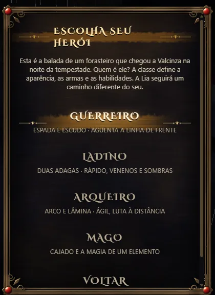
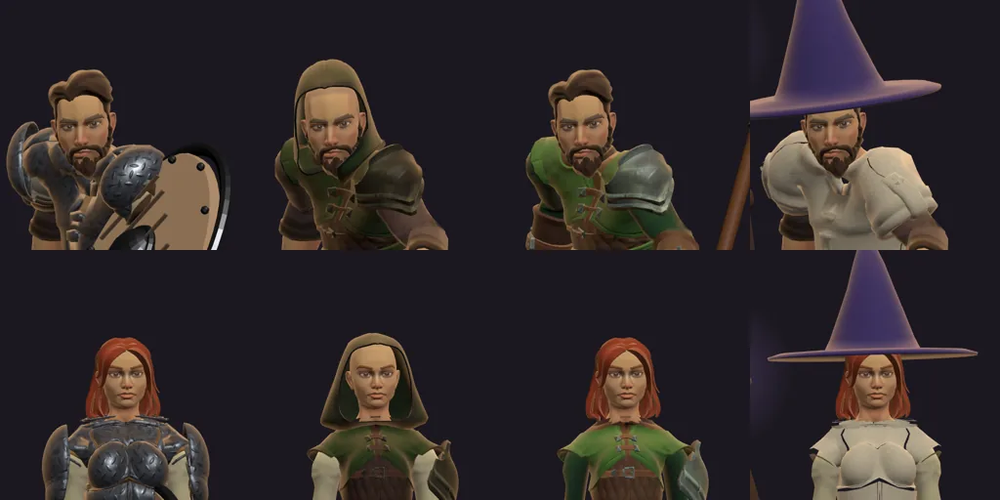
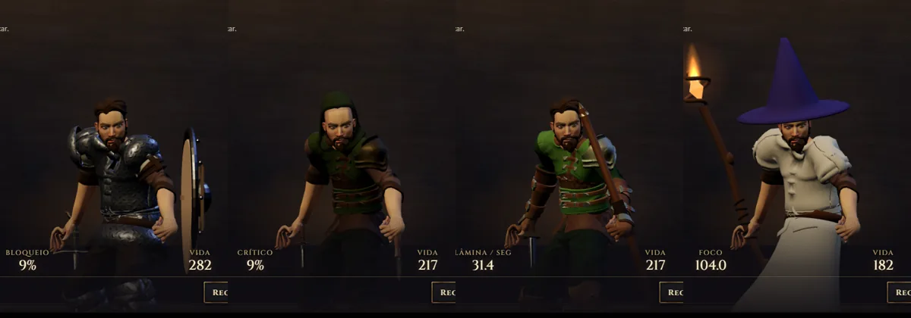
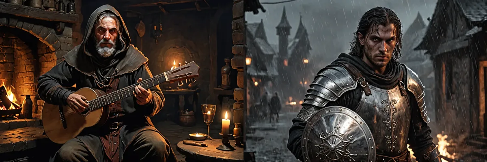

O jogo novo começa com a escolha do herói: Guerreiro, Ladino, Arqueiro ou Mago. Cada um é um personagem próprio, com aparência, armas e habilidades da classe. O Menestrel não luta mais: ele é o narrador da balada, abre a história junto à lareira da taverna e, depois do resgate da Lia, toca no poço da vila.

A escolha no jogo novo.

O herói (em cima) e a Lia (embaixo) em cada caminho.
O visual muda com o equipamento
Elmo, armadura, luvas e botas aparecem no corpo, como nos jogos do gênero: capuz de couro, elmo de ferro, cota de malha, couraça, manto de mago, chapéu pontudo, manoplas, grevas, botas de andarilho. Cada peça tem a cor da base do item, e o espaço vazio mostra roupa simples. Cada classe já começa com a roupa dela, e o Arsenal mostra a prévia vestida.

Guerreiro, ladino, arqueiro e mago com a roupa inicial.
A Lia em cada caminho
A Lia continua escolhendo um caminho diferente do seu, e agora tem a aparência de cada um: guerreira de armadura, ladina de capuz, arqueira de casaco verde ou maga de manto e chapéu pontudo.
A balada
A abertura pintada foi refeita: o Menestrel narra, e a última prancha mostra o herói escolhido. Os moradores chamam o herói de forasteiro.

O narrador e o herói.
Saves antigos
Os saves continuam valendo: o herói ganha o corpo novo, com a roupa do que estiver vestido. As Canções de Poder saem da árvore do herói, e os pontos gastos nelas voltam como pontos de habilidade.